Co-florecer
Co-florecer es un proyecto de diseño estratégico desarrollado en respuesta al desafío de trabajar con pequeñas y medianas empresas (PYMES). Enfocados en la florería "Carrito de Flores", realizamos un análisis exhaustivo para identificar sus recursos estratégicos y su valor diferencial único. El resultado fue la formulación de tres propuestas de diseño concretas y accionables, cuyo objetivo era reflejar y potenciar la identidad esencial del local, garantizando que su marca y sus ofertas reflejaran de manera efectiva lo que hace que el negocio sea verdaderamente único en el mercado.
 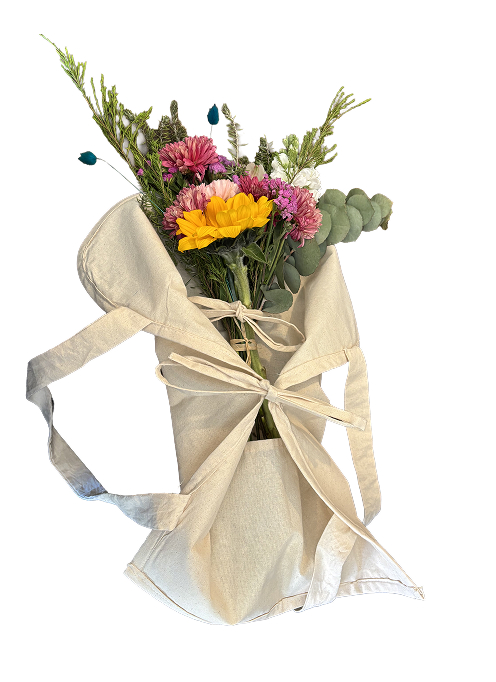
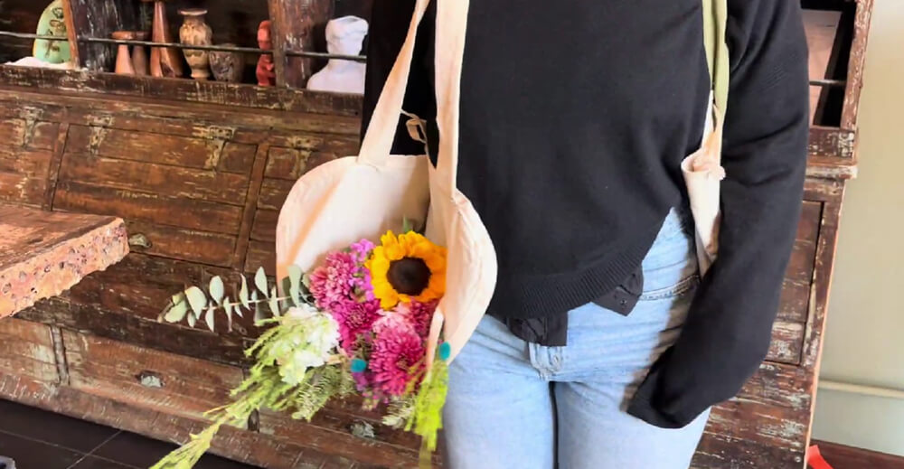
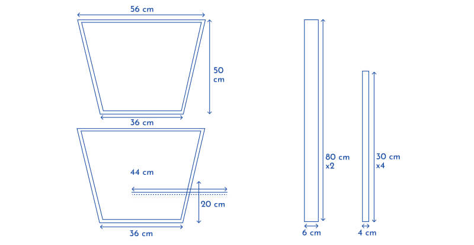
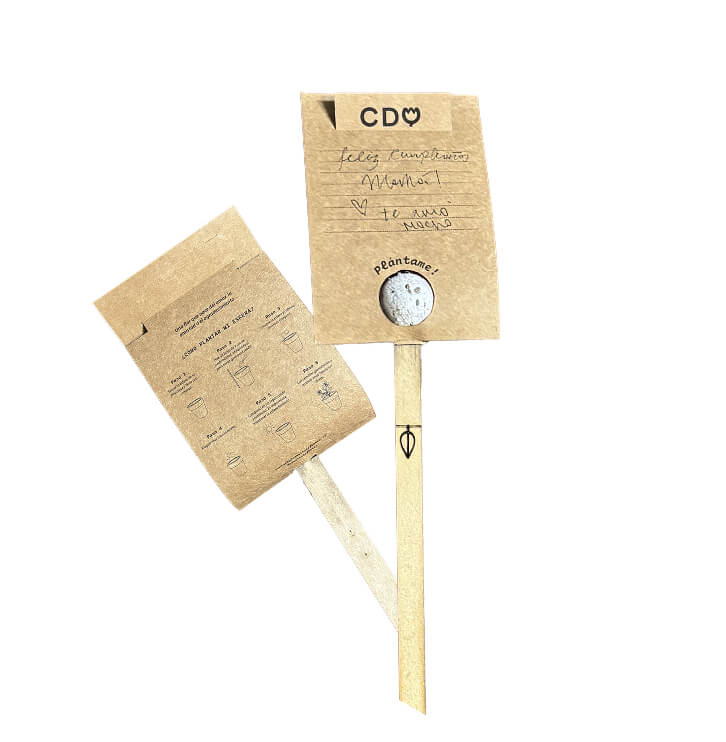
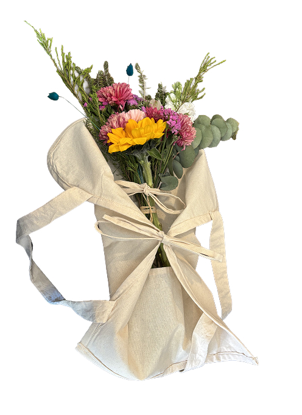
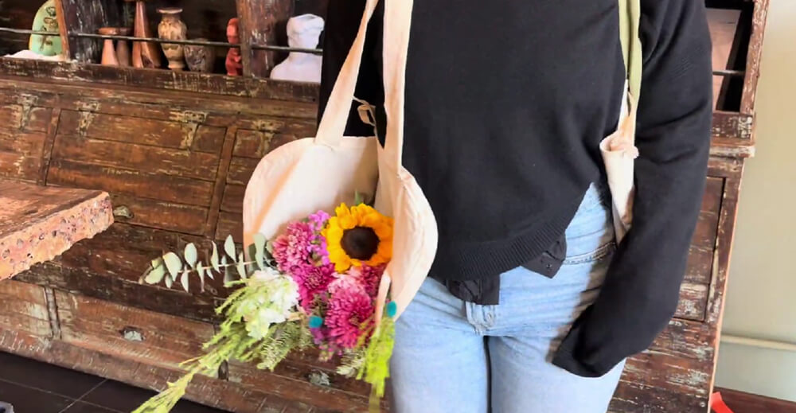
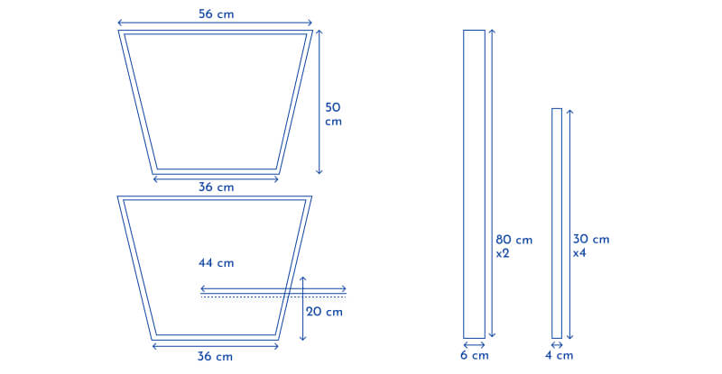
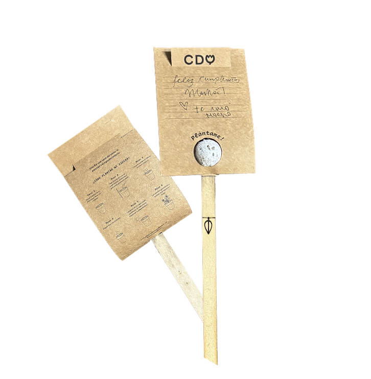
 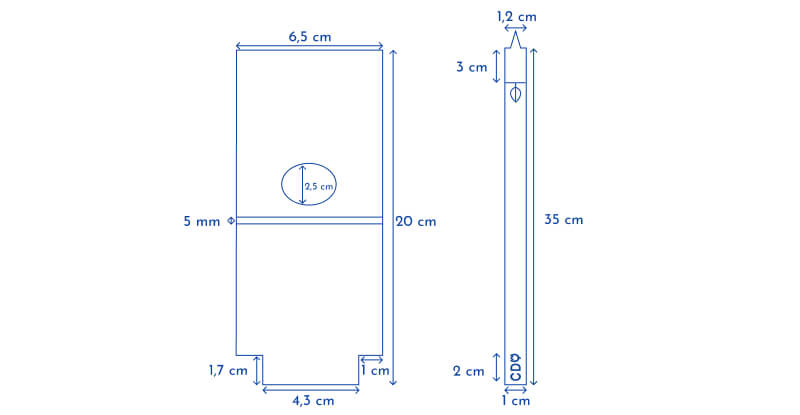
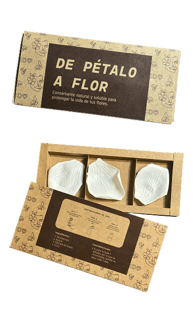
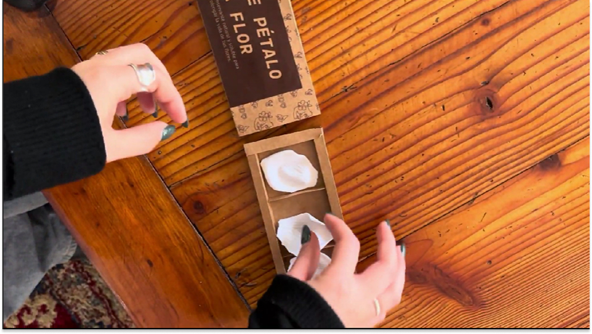
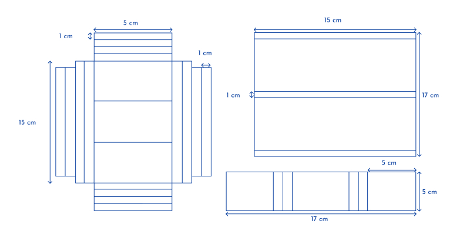
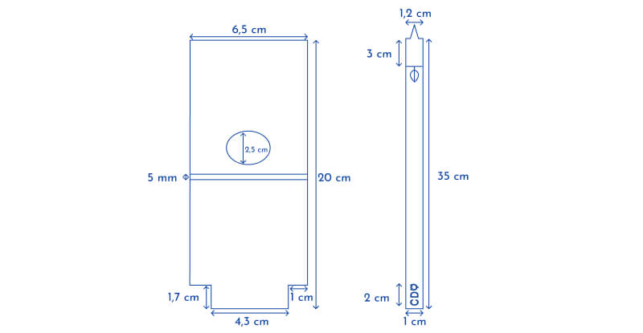
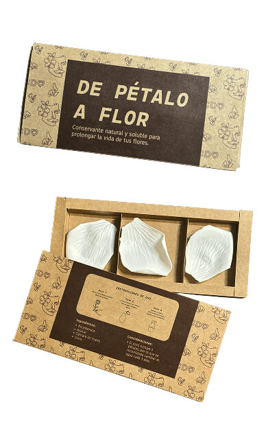
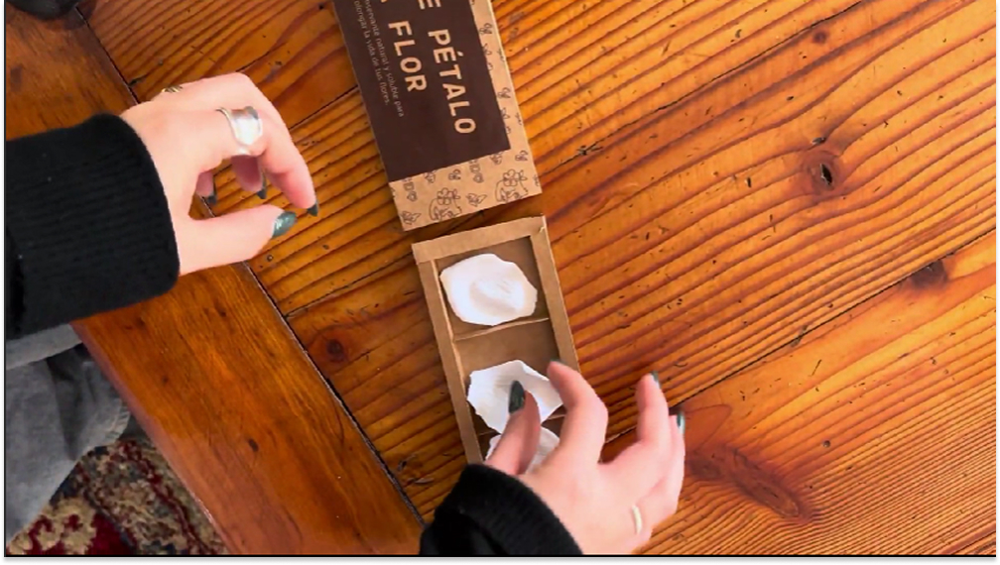
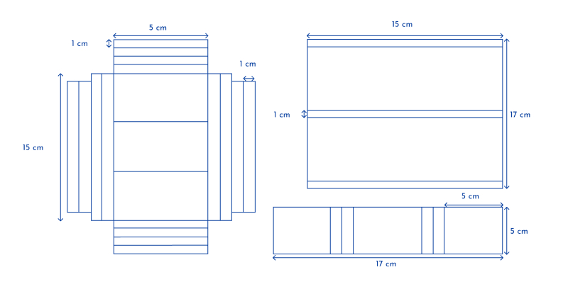